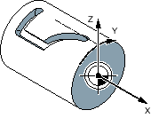
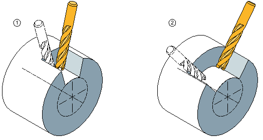
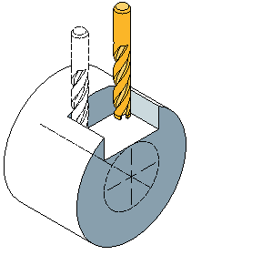

Die Zylindermanteltransformation benötigen Sie zur Bearbeitung von
Längsnuten an zylindrischen Körpern,
Quernuten an zylindrischen Körpern.
beliebig verlaufende Nuten an zylindrischen Körpern.
Der Verlauf der Nuten wird bezogen auf die abgewickelte, ebene Zylindermantelfläche programmiert. Die Programmierung kann über Gerade/Kreis, Bohr- oder Fräszyklen oder Kontur fräsen (Freie Konturprogrammierung) erfolgen.
Sind mehrere Tracyl-Datensätze eingerichtet, stehen die entsprechenden Rundachsen zur Auswahl zur Verfügung.
Sind mehrere Tracyl-Datensätze um eine Rundachse eingerichtet, stehen die entsprechenden Nummern der Datensätze zur Auswahl zur Verfügung.
Die Zylindermanteltransformation gibt es in folgenden Ausprägungen:
Bei ausgeschalteter Nutwandkorrektur erzeugt man beliebig verlaufende Nuten mit parallelen Wänden, wenn der Werkzeugdurchmesser gleich der Nutbreite ist.
Die Nutwände sind nicht parallel, wenn die Nutbreite größer als der Werkzeugdurchmesser ist.
Für die Bearbeitung wird die Kontur der Nut programmiert.
① | Längsnut |
② | Quernut |
Diese Funktion ist nur beim Bahnfräsen mit eingeschalteter Radiuskorrektur zulässig.
Bei eingeschalteter Nutwandkorrektur erzeugt man Nuten mit parallelen Wänden, auch wenn die Nutbreite größer als der Werkzeugdurchmesser ist.
Für die Bearbeitung darf nicht die Kontur der Nut programmiert werden, sondern die gedachte Mittelpunktsbahn eines in der Nut geführten Bolzens, wobei der Bolzen an jeder Wand entlang fahren muss. Die Nutbreite wird durch den Parameter D bestimmt.
Parallel begrenze Längsnut
| Hinweis |
Auswahl der NutwandkorrekturDie Auswahl der Nutwandkorrektur ist vom Trafotyp abhängig. |
Siehe auch:
Zylindermanteltransformation
Allgemeine Programmierung - Zylindermanteltransformation
Aufruf - Zylindermanteltransformation